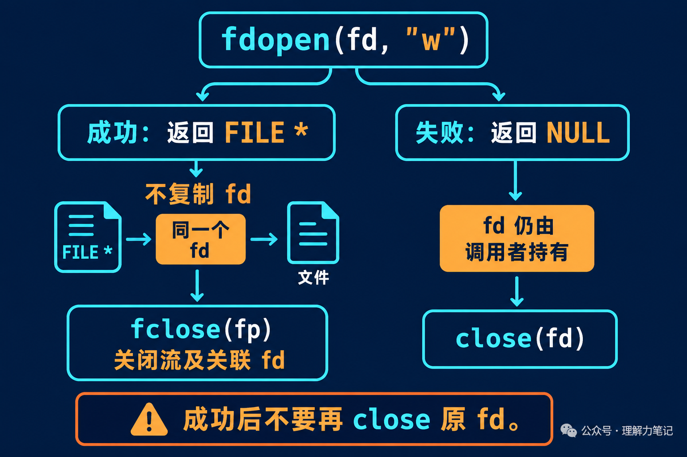

用 open 拿到了一个 fd，后面的代码却希望用 fprintf 写日志，或者用 fgets 读文本。这时可以调用 fdopen，给已有的文件描述符关联一条标准 I/O 流。
麻烦通常出现在收尾：既然手里有 fd，又有 FILE *fp，是不是两个都要关？
成功调用 fdopen 后，最后用 fclose(fp) 收尾。它会关闭关联的 fd，不要再补一次 close(fd)。如果 fdopen 返回 NULL，fd 仍由调用者负责。
fdopen 是 POSIX 接口，不属于 ISO C 标准。本篇实验运行于 macOS 14.8.8、Apple clang 16.0.0，未在 Linux 主机实测；接口规则按 POSIX 和 Linux 手册核对。
这篇文章怎么读？先看 fd 有没有被复制，再看模式该怎么选，最后给出一段成功、失败都能正确收尾的真实 C 函数。
fdopen 建立 FILE 流的管理状态，让代码可以使用标准 I/O 的缓冲、格式化和错误指示器。底层使用的仍是传进去的 fd，既没有重新按路径打开文件，也没有替你执行 dup。
可以把 fd 想成一把仓库钥匙，fdopen 则是把钥匙交给代管柜台。以后通过柜台办事，撤销代管时由柜台交还钥匙。如果代管没有办成，钥匙还在你手里。这个类比只说明关闭责任，实际程序里没有额外复制一把“备用钥匙”。

实验先用 mkstemp 创建临时文件，写入 abc，定位回开头。下面两段是同一个完整程序 fdopen_probe.c 的连续片段，准备文件的部分省略：
成功关闭后，程序立即用 fcntl 查询旧 fd，期间没有打开新文件，避免号码被重新分配而干扰观察：
实际输出：
same_fd=1 表明流关联的就是原 fd；closed_fd=1 表明关闭流后，旧 fd 已经无效。这个查询只用于实验，业务代码不需要照做。
提前 close(fd) 同样有问题：流还存在，底层描述符却已经失效；如果数字被后续 open 重用，流再执行读写或关闭，甚至可能碰到另一个文件。调用成功后，把读写和关闭都交给流，责任就清楚了。
fdopen 的模式描述的是这条流准备怎样使用已有 fd，不能替原 fd 增加访问权限。
| 原 fd 的打开方式 | 兼容的常用流模式 |
|---|---|
O_RDONLY |
"r" |
O_WRONLY |
"w" |
O_RDWR |
"r"、"w"、"r+" |
这张表只列读写权限的常见组合。不能拿只读 fd 包装成可写流，再期待它能正常写入。
还有一个与 fopen 不同的地方：fdopen(fd, "w") 不会截断文件，也不会自动回到文件开头。新流的位置承接已有 fd 的偏移。
配套实验先写入 abc 并定位到开头，再用下节函数包装为 "w" 流，只写入一个 X。关闭后重新打开文件，读回的是：
X 覆盖了第一个字节，bc 还在。如果业务需要清空文件，应在最初打开时明确使用 O_TRUNC 等操作，不能指望 fdopen 替你清空。
下面的 save_fd 接收一个有效、可写的 fd，在当前位置写入文本。它采用一个简单约定：函数接管 fd，无论成功失败，调用者返回后都不再使用它。
完整实现是 save_fd.c，包含 <errno.h>、<stdio.h> 和 <unistd.h>，并在头文件前定义 _POSIX_C_SOURCE 200809L。为方便阅读，函数拆成两段，按顺序连接就是完整函数。
第一段处理包装失败。保存 errno，避免清理动作覆盖原来的错误：
包装成功后只通过流写入，用 fclose 完成最后的刷新和关闭。即使 fputs 已经失败，也要执行这次清理：
函数返回 0 表示写入和关闭均未报告错误，返回 -1 时通过 errno 报告原因。它不承诺持久化，文件落盘要求仍要单独处理。
配套测试验证了普通文件写入、设备写入和关闭后的 fd 状态。另一个测试构建把 fdopen 替换为返回 ENOMEM 的测试函数，确认失败分支也关闭 fd，并保留原错误。这是故障注入测试，不是假装真的耗尽了系统内存。
如果原 fd 必须继续由别处持有，可以先 dup，再把复制得到的 fd 交给 fdopen。但两个描述符仍共享打开文件描述和文件偏移；dup 只分开了描述符的关闭责任，没有创造独立的读写位置，两边操作仍要协调。
本文为公众号「理解力笔记」原创。转载请联系作者，并保留出处。